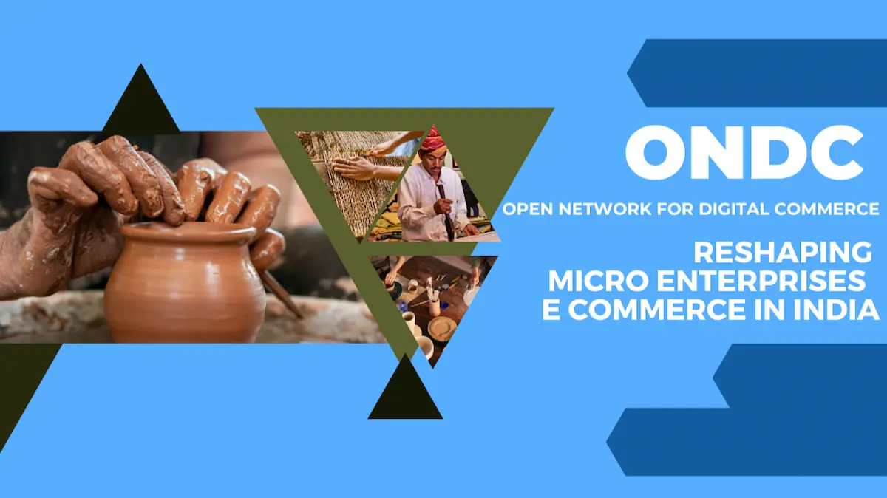
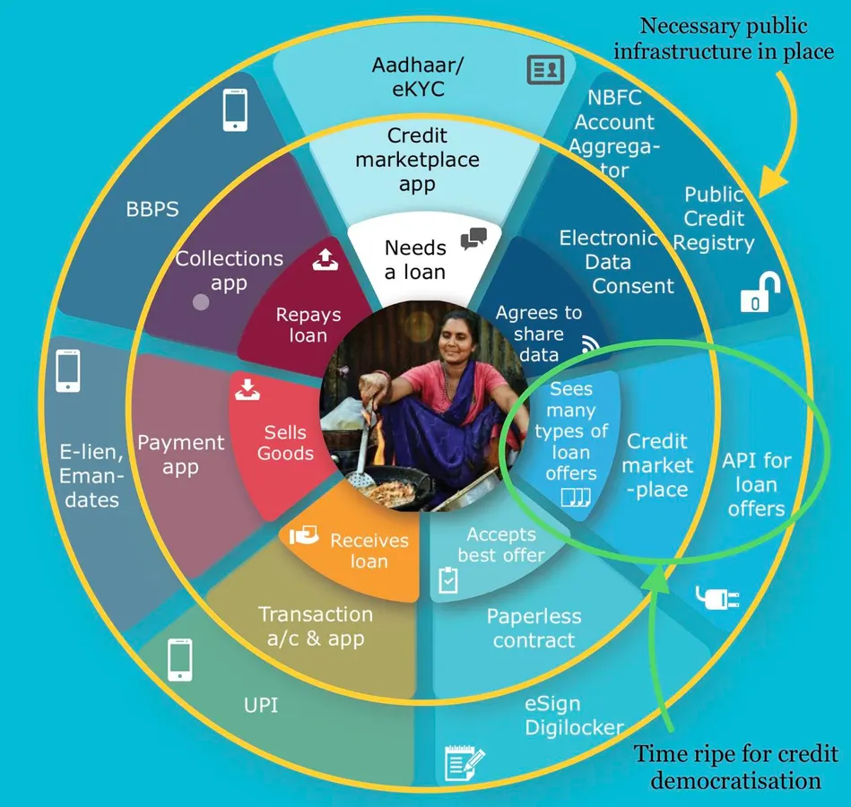
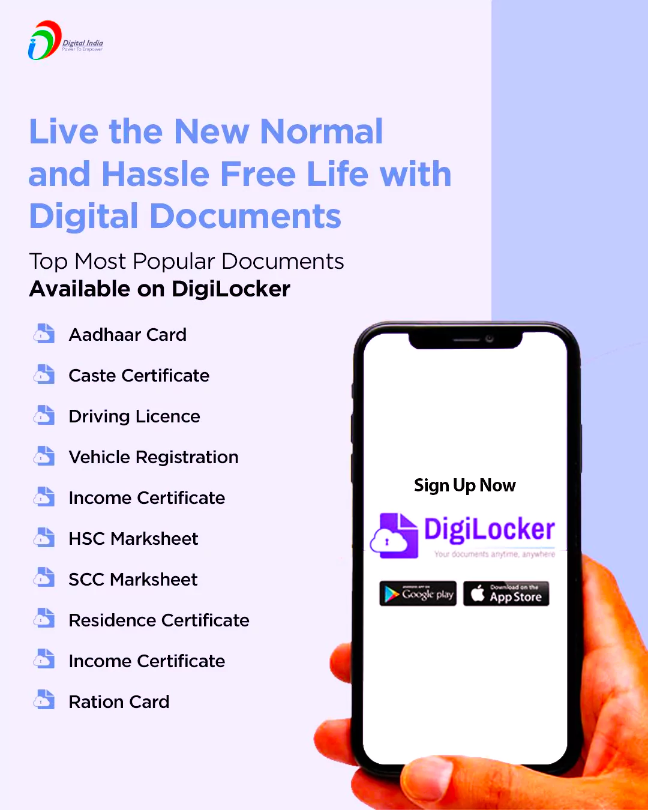
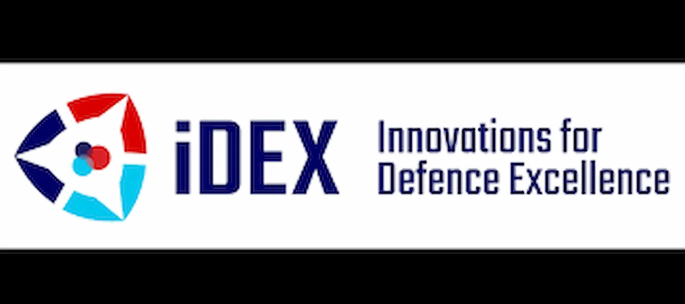
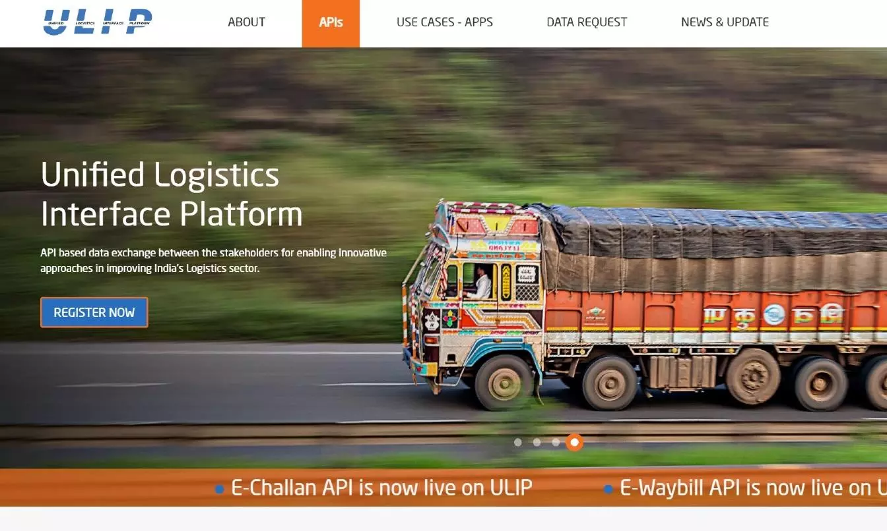
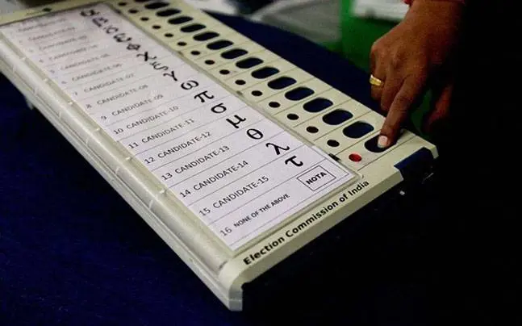

This is not just about going paperless. It is about rewiring who holds power in the digital economy. Each layer – payments, identity, health, logistics, research – is being turned into a public good that multiple players can innovate on top of. Below is a tour of the key building blocks.
1. UPI: Democratization of Digital Payments

Unified Payments Interface (UPI) turned India into one of the world’s largest real-time payments markets. Any bank or app can plug into the same protocol and send money to any other. This killed the old model of closed, high-fee card networks and made it normal for a tea stall or auto driver to accept digital payments.
2. ONDC: Democratization of E-Commerce

The Open Network for Digital Commerce (ONDC) tries to do for e-commerce what UPI did for payments. Today, a few marketplaces decide who gets visibility, what fees are charged and which sellers survive. ONDC instead defines an open protocol where many buyer apps, seller apps and logistics providers interoperate. A small restaurant or kirana store can appear on multiple apps without paying gatekeeping commissions to one dominant platform.
3. Aadhaar (UIDAI): Democratization of Identity
Aadhaar is a digital identity layer that allows individuals to prove who they are, online or offline, with high confidence. It cut leakages in welfare schemes, reduced fake or duplicate beneficiaries and made it easier to open bank accounts or access telecom services. Instead of every private company maintaining its own fragile ID system, Aadhaar provides a shared, verifiable foundation.
4. OCEN: Democratization of Credit

The Open Credit Enablement Network (OCEN) aims to unlock small-ticket loans for millions of informal workers and micro-businesses. By using cash-flow data from platforms and bank accounts, lenders can underwrite borrowers who lack traditional collateral. This challenges the old model where credit was reserved for large, asset-rich firms.
5. DigiLocker: Democratization of Documents

DigiLocker acts as a secure digital wallet for official documents: Aadhaar, driving licence, educational certificates and more. Citizens no longer need to carry bundles of paper, and institutions can instantly verify authenticity. It reduces middlemen, forgery and time wasted in queues.
6. Digi Yatra: Democratization of Airport Experience

Digi Yatra uses digital identity for seamless airport journeys — moving from entry gate to boarding without repeated document checks. In the long term, a standardized, privacy-aware framework can prevent each airport or airline from locking passengers into its own proprietary ID system.
7. iDEX: Democratization of Defence Innovation

Innovations for Defence Excellence (iDEX) opens defence procurement to startups, MSMEs and non-traditional players. Instead of only a few legacy vendors building everything, the armed forces can source niche technologies from many innovators, increasing competition and reducing costs.
8. GeM: Democratization of Government Procurement
The Government e-Marketplace (GeM) is a platform where government departments buy goods and services. It replaces opaque offline tendering with a digital system that small suppliers can access. Prices are visible, middlemen are reduced and corruption becomes harder to hide.
9. ULIP: Democratization of Logistics

The Unified Logistics Interface Platform (ULIP) integrates data from ports, airports, railways and road transport. Instead of each node guarding its own siloed information, ULIP allows authorized players to see end-to-end shipment status, improving efficiency and reducing delays.
10. DBT: Democratization of Welfare Delivery
Direct Benefit Transfer (DBT), combined with Aadhaar and bank accounts, allows subsidies and welfare payments to flow directly to citizens. Leakages shrink, ghost beneficiaries are removed and citizens gain more control over when and how they use funds.
11. Democratization of Education

Online degrees from institutions like IIT Madras and free courseware via NPTEL are examples of digital public infrastructure for education. High-quality knowledge, once locked inside a handful of campuses, can now reach students in small towns or working professionals who cannot relocate.
12. ONOS: Democratization of Research Access
One Nation One Subscription (ONOS) aims to negotiate national-level deals with publishers so that universities, researchers and students across the country can read research articles without each institution paying separately. This takes on paywalled knowledge monopolies.
13. ONOE: Democratization of Elections
One Nation One Election (ONOE) is a proposal to synchronize elections at different levels of government. While still debated, the idea aims to reduce permanent campaign mode, cut costs and bring more predictability to governance cycles.
14. ABHA: Democratization of Health Records

ABHA (Ayushman Bharat Health Account) gives individuals a digital health ID and the ability to consent to sharing medical records with hospitals, doctors or insurers. It shifts control over data from institutions to patients and improves continuity of care.
Conclusion: A Blueprint Others Will Study
Seen in isolation, each initiative looks like a narrow sectoral reform. Taken together, they form a strategy: build interoperable public rails and let many actors innovate on top. This is very different from a world where a handful of global platforms own identity, payments and data.
The model is far from perfect and raises its own questions about privacy, accountability and state capacity. But as more countries worry about foreign tech monopolies and digital colonization, India’s experiment with digital public infrastructure will increasingly be watched as a possible alternative path.